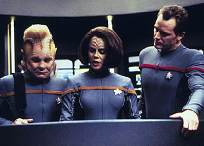
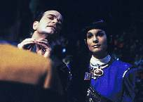
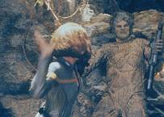
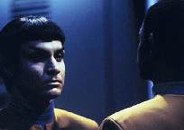

|
MANCHETE
DO EPISDIO
Pon farr Vulcano provoca temporada
de acasalamento a bordo da Voyager
Episdio
anterior | Prximo
episdio
Sinopse:
Data Estelar: 50537.2.
 Enquanto
se apronta para uma misso avanada, BElanna se surpreende com
o pedido de Vorik para tornar-se sua parceira. Ela recusa, mas o
alferes agarra seu rosto e desloca sua mandbula. O Doutor explica
que Vorik est entrando no ritual de unio Vulcano conhecido como pon
farr. Se ele no encontrar uma parceira, pode vir a morrer.
Vorik tenta atravessar o difcil perodo com meditao
intensiva.
 O
grupo avanado inicia sua busca pela galicita, o material que a
tripulao havia detectado em um planeta prximo, mas B'Elanna
torna-se cada vez mais agressiva, chegando a morder Paris. Tuvok
descobre que Vorik tocara o rosto da tenente, o que iniciou um elo
teleptico entre os dois. Agora Torres tambm est vivenciando o pon
farr. Vorik est quase fora de si no desejo de unir-se a B'Elanna,
mas forado a permanecer na Voyager, onde o Doutor tenta
ajud-lo programando uma fmea Vulcana hologrfica no holodeck.
 No
planeta, Paris, Tuvok e Chakotay localizam Torres e lhe explicam o
que est se passando. Enquanto tentam convenc-la a deixar o
planeta, um grupo de aliengenas subterrneos os cercam. H um
confronto e os homens desaparecem com Chakotay e Tuvok, deixando
Paris e Torres sozinhos. Durante a busca pelos colegas, Torres diz a
Paris que quer unir-se a ele, mas o piloto se nega a tomar vantagem
da situao.
 Chakotay
e Tuvok convencem os aliengenas, chamados Sakari, que vieram em
paz. Os Sakari explicam que se mudaram para o subsolo quando seus
ancestrais foram atacados por invasores desconhecidos. Chakotay
oferece ajuda para proteg-los de ataques futuros em troca de
galicita. Em algum outro lugar, Torres tenta seduzir Paris, mas ele
novamente contm a colega. Pouco tempo depois, Tuvok e Chakotay os
encontram. Chakotay
e Tuvok convencem os aliengenas, chamados Sakari, que vieram em
paz. Os Sakari explicam que se mudaram para o subsolo quando seus
ancestrais foram atacados por invasores desconhecidos. Chakotay
oferece ajuda para proteg-los de ataques futuros em troca de
galicita. Em algum outro lugar, Torres tenta seduzir Paris, mas ele
novamente contm a colega. Pouco tempo depois, Tuvok e Chakotay os
encontram.
De repente, Vorik, que no consegue mais
segurar seus instintos, aparece no local. Ele desafia Paris por
Torres, mas a prpria tenente aceita o desafio e inicia uma batalha
ritual, derrotando o oponente. A febre passa, e o grupo avanado
retorna nave. Mais tarde, Chakotay encontra evidncias dos
invasores de que os Sakari falavam e, alarmado, chama Janeway
superfcie; os dois de deparam com um cadver Borg.
Comentrios:
Como de costume, "Blood Fever"
apresenta mais de uma trama central; na verdade, tem uma principal
--a questo dos hormnios Vulcanos-- e outra secundria --os
aliengenas no planeta. Analisando o roteiro isoladamente, a
primeira aparenta ser mais importante, mas, no contexto da srie, a
outra com certeza muito mais.
 Havia
muito o Pon Farr no era tratado em Jornada. Tanto
em A Nova Gerao quanto em Deep Space Nine o
assunto pareceu pouco relevante, j que naquelas sries no havia
personagens Vulcanos fixos. Quando Voyager estreou com
suas novidades --entre elas, um Vulcano negro--, ficou meio bvio
que mais cedo ou mais tarde aquele desequilbrio neuroqumico da
raa mostraria as caras novamente. Era uma certeza to absoluta
quanto a apario dos Borgs (sobre a qual haver comentrios
mais detalhados). Afinal, previa-se que a srie duraria sete
temporadas, o intervalo exato entre os perodos de casamento
Vulcano. A forma como a produo decidiu se desvincular da
previsibilidade foi mostrar um outro personagem e no Tuvok
atravessando o chamado Pon Farr. Havia
muito o Pon Farr no era tratado em Jornada. Tanto
em A Nova Gerao quanto em Deep Space Nine o
assunto pareceu pouco relevante, j que naquelas sries no havia
personagens Vulcanos fixos. Quando Voyager estreou com
suas novidades --entre elas, um Vulcano negro--, ficou meio bvio
que mais cedo ou mais tarde aquele desequilbrio neuroqumico da
raa mostraria as caras novamente. Era uma certeza to absoluta
quanto a apario dos Borgs (sobre a qual haver comentrios
mais detalhados). Afinal, previa-se que a srie duraria sete
temporadas, o intervalo exato entre os perodos de casamento
Vulcano. A forma como a produo decidiu se desvincular da
previsibilidade foi mostrar um outro personagem e no Tuvok
atravessando o chamado Pon Farr.
 Os
fs haviam tido, at ento, praticamente um s episdio em
todas as sries de Jornada que abordava as prticas de
unio Vulcanas ("Amok Time"). Na Srie
Clssica, Spock, porm, no se limitava ao Pon Farr;
apaixonando-se ocasionalmente por mulheres aliengenas. Vale
lembrar, o famoso oficial da Enterprise original no era um Vulcano
de sangue puro, mas filho de uma mulher humana. Voyager a
primeira srie a trabalhar a fundo personagens Vulcanos legtimos.
E que espcie paradoxal so os
Vulcanos. A princpio, personificam a lgica e a sabedoria. So
equilibrados, totalmente embasados no pensamento crtico e
desprovidos de subjetividade. Tais caractersticas lhes do
vantagens bem definidas. Mas h quem diga que elas so tambm a
runa da espcie. A raa ritualiza aquilo que no se enquadra no
lgico; seus instintos e chamados naturais mais se assemelham aos
dos primatas terrestres do que aos seres humanos. H a bajulao
da fmea e a luta contra os outros pretendentes; e predomina o
darwinismo, a lei do mais forte.
 A
situao se complica um pouco mais do que o normal em "Blood
Fever". Na Enterprise-D, de A Nova Gerao, os
oficiais Vulcanos tinham os seus familiares a bordo com eles. Caso
no tivessem, provavelmente podiam pedir uma licena temporria e
voltar ao seu planeta. Mas, na Voyager, Vorik e Tuvok esto
virtualmente sozinhos. A nave, alm de militar --no carregando,
portanto, passageiros ou civis--, encara uma viagem de no mnimo 70
anos para o territrio conhecido. A
situao se complica um pouco mais do que o normal em "Blood
Fever". Na Enterprise-D, de A Nova Gerao, os
oficiais Vulcanos tinham os seus familiares a bordo com eles. Caso
no tivessem, provavelmente podiam pedir uma licena temporria e
voltar ao seu planeta. Mas, na Voyager, Vorik e Tuvok esto
virtualmente sozinhos. A nave, alm de militar --no carregando,
portanto, passageiros ou civis--, encara uma viagem de no mnimo 70
anos para o territrio conhecido.
Sobre o Pon Farr, h duas
informaes mostradas na srie das quais ningum sabia. Ou elas
se tratam de uma novidade, ou so mais uma contradio. A
primeira delas o fato de um indivduo no-Vulcano
"contrair" os efeitos do fenmeno. Tuvok chove no molhado
quando explica a Vorik que j houve casos assim e que B'Elanna, por
ser Klingon, pode t-los experimentado com mais intensidade. A
outra, que no tem explicao, quando Vorik mente para o
Doutor no holodeck. Ele diz que o mtodo sugerido para combater a
situao funciona e que tudo est se normalizando. Na cena
seguinte, no entanto, o alferes est na superfcie do planeta,
realizando o tal ritual do combate. Tudo bem, os Vulcanos no Pon
Farr costumam agir instintivamente, mas ento essa idia de
que Vulcano no mente tem que ser esquecida. Na verdade, eles
mentem sim, mas, como Tuvok tem o costume de fazer, usam eufemismos
para amenizar o fato. s lembrar da cena no episdio "State
of Flux", em que o chefe de segurana diz a Chakotay
que mentiu para os Maquis sob ordens de um oficial superior.
 Seguindo
em frente na histria, o pblico tem uma pequena amostra do que os
produtores tem em mente para Tom e B'Elanna. O aprofundamento no
relacionamento dos dois , talvez, o ponto mais consistente de toda
a srie. Nem mesmo a relao Janeway/Chakotay, Janeway/Tuvok ou
Tom/Harry to explorada. estranho, porque esses outros
relacionamentos sempre foram sugeridos, desde o incio de Voyager,
passando depois a ser ignorados. A idia que transparecia
inicialmente a de que B'Elanna acabaria com Chakotay, como visto
em "Persistence of Vision".
Depois, ele passou a se aproximar mais da capit, a exemplo, "Resolutions"
e "Coda". Tom sempre
mostrou evidncias de que ficaria sozinho, por no ter maturidade
para levar um compromisso. Mas
como esse terceiro ano de Voyager como um caldeiro de
novas frmulas e muito experimento, tudo mostrado na srie deixa
de ser previsvel. Seguindo
em frente na histria, o pblico tem uma pequena amostra do que os
produtores tem em mente para Tom e B'Elanna. O aprofundamento no
relacionamento dos dois , talvez, o ponto mais consistente de toda
a srie. Nem mesmo a relao Janeway/Chakotay, Janeway/Tuvok ou
Tom/Harry to explorada. estranho, porque esses outros
relacionamentos sempre foram sugeridos, desde o incio de Voyager,
passando depois a ser ignorados. A idia que transparecia
inicialmente a de que B'Elanna acabaria com Chakotay, como visto
em "Persistence of Vision".
Depois, ele passou a se aproximar mais da capit, a exemplo, "Resolutions"
e "Coda". Tom sempre
mostrou evidncias de que ficaria sozinho, por no ter maturidade
para levar um compromisso. Mas
como esse terceiro ano de Voyager como um caldeiro de
novas frmulas e muito experimento, tudo mostrado na srie deixa
de ser previsvel.
O episdio ainda mostrou bem o
ntimo de Tom e B'Elanna. O piloto da nave no mais aquele
caador de mulheres visto em "Caretaker".
Ele agora tem princpios, moral, tica. Tom Paris simplesmente
pulou do 8 para o 80. No apenas deixou de aventurar-se com
diferentes mulheres, como contm-se diante da mulher em quem est
verdadeiramente interessado. Engraado como algum como ele possa
resistir aos "chamados da natureza", enquanto Vorik, o
Vulcano, perca o controle. Sobre B'Elanna, bom, o telespectador
pde ver de novo o suprimido lado Klingon flor da pele. uma
pena que isso acontea to esporadicamente, porque Roxann Dawson
faz uma tima Klingon. Aqui ela est temperamental ao mximo,
sensual, movida pelo corpo e no pela mente, frustrada, brava,
assustada. Enfim, todas as emoes so retratadas pela atriz com
muita intensidade e convencem.
Sobre Vorik, no h muito a dizer,
a no ser que apareceu do nada no meio da terceira temporada e vem
ganhando crescente destaque na srie. sempre bom ver personagens
secundrios em desenvolvimento, coisa que deveria acontecer em Voyager
mais do que em qualquer outra srie de Jornada. A nave tem
uma tripulao limitada, motivo pelo qual difcil compreender
a apario de figurantes diferentes a cada semana. E, quando um ou
outro ganham destaque, como Seska, Suder ou Hogan, eles acabam
mortos. Bom, isto no acontecer a Vorik. Ele continuar em
evidncia sobretudo nesta e na prxima temporada. Mas, a longo
prazo, voltar para o lugar de onde veio...
 Por
ltimo, vale lembrar o peso da presena dos Borgs em "Blood
Fever". Eles dispensam apresentaes. So simplesmente
os viles mais temidos de Jornada. A produo de Voyager
sabia que um dia recorreria a eles e talvez at seja por isso que a
srie tenha sido ambientada no quadrante Delta. Embora a apario
na histria da semana no tenha durado mais do que poucos
segundos, foi muito simblica. A capit Janeway finalmente se
deparou com algo que ela vinha temendo desde que iniciou sua longa
viagem para casa. A partir deste ponto, a vida da tripulao nunca
mais ser a mesma. A proximidade com o territrio Borg vai se
tornar cada vez mais evidente e alcanar um clmax sensacional.
Para a produo do seriado, significa uma total reestruturao
em todos os aspectos; o tom das histrias vai mudar, a premissa, os
personagens, tudo. esperar para ver. Por
ltimo, vale lembrar o peso da presena dos Borgs em "Blood
Fever". Eles dispensam apresentaes. So simplesmente
os viles mais temidos de Jornada. A produo de Voyager
sabia que um dia recorreria a eles e talvez at seja por isso que a
srie tenha sido ambientada no quadrante Delta. Embora a apario
na histria da semana no tenha durado mais do que poucos
segundos, foi muito simblica. A capit Janeway finalmente se
deparou com algo que ela vinha temendo desde que iniciou sua longa
viagem para casa. A partir deste ponto, a vida da tripulao nunca
mais ser a mesma. A proximidade com o territrio Borg vai se
tornar cada vez mais evidente e alcanar um clmax sensacional.
Para a produo do seriado, significa uma total reestruturao
em todos os aspectos; o tom das histrias vai mudar, a premissa, os
personagens, tudo. esperar para ver.
Citaes:
B'Elanna - "In other words,
you're ready. Let's go."
("Em outras palavras, voc est pronto. Vamos.")
Paris - "She bit me... and
she seemed to be enjoying it, in a Klingon kind of way... She's
really not herself."
("Ela me mordeu... e parecia estar gostando, de um jeito
Klingon... Ela est fora de si.")
Vorik - "I hope Lt. Torres
isn't too upset with me."
("Espero que a tenente Torres no esteja muito zangada
comigo.")
Doutor - "With Lt. Torres, 'upset' is a relative term."
("Com a tenente Torres, 'zangada' um termo relativo.")
Paris - "Are you saying that
I'm impossible to resist?"
("Voc est dizendo que eu sou irresistvel?")
Torres - "I wouldn't go that far."
("Eu no iria to longe.")
Paris - "You're afraid that
your big, scary Klingon side might have been showing. Well, I saw it
up close. And you know, it wasn't so terrible. In fact, I wouldn't
mind seeing it again someday."
("Voc est com preocupada que seu grande e assustador
lado Klingon possa ter se mostrado. Bom, eu o vi de perto. E sabe,
ele no era to terrvel. Alis, eu no me importaria de v-lo
novamente outro dia.")
B'Elanna - "Careful what you wish for, Lieutenant."
("Cuidado com o que deseja, tenente.")
Trivia:
 O alferes Vorik aparece pela terceira vez na srie. As outras
ocasies foram nos episdios "Fair
Trade" e "Alter Ego".
O alferes Vorik aparece pela terceira vez na srie. As outras
ocasies foram nos episdios "Fair
Trade" e "Alter Ego".
Deborah Levin reprisar o seu papel como a alferes Lang nos
episdios "Displaced" e "Year of Hell,
Part I", do quarto ano.
a segunda vez em que o Pon Farr Vulcano retratado em tela. A
primeira meno a essa peculiaridade da fisiologia reprodutiva
desses aliengenas ocorreu no episdio "Amok Time",
do segundo ano da Srie Clssica.
A direo do episdio ficou sob a batuta de Andrew Robinson, mais
conhecido do pblico como o intrprete do Cardassiano Garak, de Deep
Space Nine.
Segundo o alferes Vorik, h 73 homens a bordo da Voyager. Isso
representa exatamente 50% da tripulao.
Aqui fica estabelecido que Tuvok tem um implante artificial no
brao. O ligamento do cotovelo teve de ser substitudo aps uma
simulao de combate.
Ficha
tcnica:
Dirigido
por: Andrew Robinson
Histria de: Lisa Klink
Exibido em 05/02/1997
Produo: 058
Elenco:
Kate Mulgrew como
Kathryn Janeway
Robert Beltran como Chakotay
Roxann Biggs-Dawson como B'Elanna Torres
Robert Duncan McNeill como Tom Paris
Jennifer Lien como Kes
Ethan Phillips como Neelix
Robert Picardo como Doutor
Tim Russ como Tuvok
Garrett Wang como Harry Kim
Elenco convidado:
Alexander Enberg como Vorik
Bruce Bohne como Ishan
Deborah Levin como alferes Lang
Episdio
anterior | Prximo
episdio
|